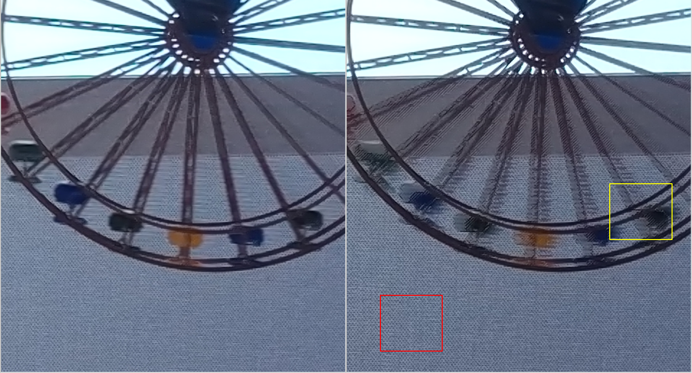
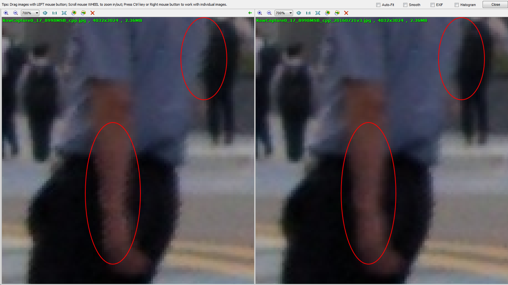
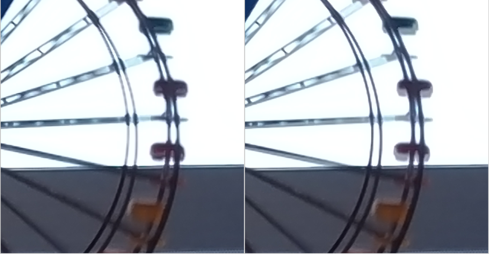
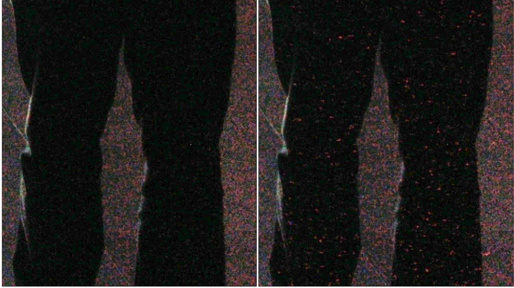

These examples illustrate the effects of adjusting specific HDR
parameter values.
Effects of the recon_motion_th1 parameter
The recon_motion_th1 parameter controls the threshold 1 motion switching function. In the
image at right in the following example, the parameter is set at 1023 which results
in less interpolated T1 and more scaled T2, thereby producing more resolution and
more zigzag artifacts. In the image at left, the parameter is set at 184 which
results in more interpolated T1 and less scaled T2, thereby producing less zigzag
artifcats and less resolution.
Figure : (L) recon_motion_th1 = 184, (R) recon_motion_th1 = 1023

Effects of the recon_dark_th1 parameter
The recon_dark_th1 parameter represents threshold 1 for the dark noise switching
function and controls the detail/noise level trade-off in dark regions. In the
example below, increasing the parameter value reduces the zig-zag artifacts in the
dark regions.
Figure : (L) recon_dark_th1 = 0, (R) recon_dark_th1 =
10

Effect of mac_motion parameters
The mac_motion parameters work together to control the motion switch in HDR
MAC to use longer or shorter pixels and to control the motion adaption strength
value.
Figure : (L) Shorter exposure pixels, sharper but noiser (R)
longer eposure pixels, more motion blur

In the examples above, the image at left has lower values for the mac_motion
threshold parameters and the image at right has higer values. The range for the
mac_motion threshold paraemeters is 0 to 1023, the lower the value the shorter the
pixels. The following table shows the parameter values for each example.
| Parameter |
Example (L) |
Example (R) |
| mac_motion0_th1 |
16 |
60 |
| mac_motion0_th2 |
10 |
24 |
| mac_motion0_strength |
16 |
8 |
If mac_motion0_th1 and mac_motion0_th2 are set too small, it will
over-detect dark regions as motion regions and, as a result, blend more noisy T2 in
the MAC output. Compare the two images in the following example where the image on
the right has smaller values for the parameters and shows more noise in the dark
regions.
Figure : (L) mac_motion_th1 = 16, mac_motion_th2 = 10
(R) mac_motion_th1 = 8, mac_motion_th2 = 5
